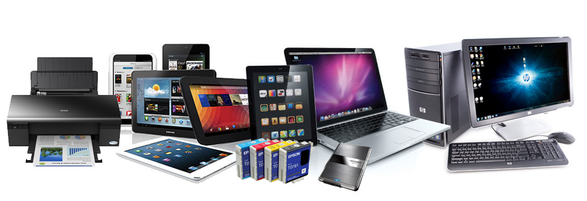

Mantenimiento y reparacion de computadoras, si su equipo dejo de funcionar no se preocupe, nosotros lo solucionamos, contamos con tecnicas capaces de solucionar el problema en el lugar de residencia o negocio, Y si requiere traslado hasta nuestro taller de reparacion, su equipo sera devuelto con la garantia de no reaizar ningun cambio ajeno al servicio solicitado.
Para un mejor servicio a nuestros clientes y socios, contamos con asistencia remota para problemas urgentes en caso de poderse solucionar de esta manera, de lo contrario llegaremos en menos de 24 horas hasta el sitio para atenderlo personalmente de la mejor manera.
Venta de equipo de computo, impresoras, refaciones, accesorios, consumibles, Windows, Office, Antivirus, Pantallas, Discos, Teclados, Mouse, Gabinetes, Procesadores, Memorias, Reguladores, Cargadores, Punto de venta, Entre otros.

Sabemos lo importante que es para usted solucionar el problema, por eso, garantizamos dar solución en un máximo de 72 horas una vez que ha sido diagnosticado su equipo, conozca todo sobre nuestros diferentes servicios que le pueden hacer mucho más fácil y efectivo un proceso o tarea dentro de su Empresa, Negocio o Residencia.
 |
 |
 |
|
MANTENIMIENTO DE PC Y LAPTOP |
REPARACIÓN DE SOFTWARE |
REPARACIÓN DE HARDWARE |
REDES DE COMPUTADORAS |
| Si su equipo está funcionando adecuadamente, y desea darle solo un mantenimiento preventivo para seguirlo manteniendo así y tener la certeza de garantizar la seguridad del equipo y la información que almacena en el. | Cuando su equipo ya necesita formateo e instalación de sistema operativo, antivirus, paquetería de ofimática, así como la paquetería complementaria para trabajar en oficina o realizar sus trabajos y tareas de la escuela. | Actualización de computadoras, reemplazo de discos, expansión de memoria RAM, cambio de display, cargadores o eliminadores de corriente, baterías, teclados, procesadores, tarjetas, centro de carga, cable de video, entre otros. | ¿Desea implementar su red de trabajo o bien rediseñarla?, nosotros le brindamos el servicio de instalación y/o mantenimiento de su red de computadoras y recursos a la medida de su Empresa, Negocio, Oficinas o Cibercafé. |
Nuestro Proceso La manera más fácil y eficaz para que su equipo pueda ser reparado inclusive, si no la puede traer hasta nuestro taller de reparación.
|